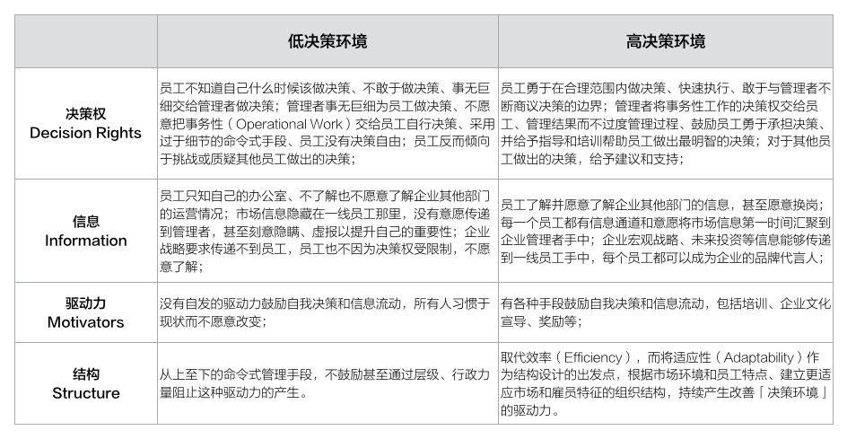

《战略十篇》的第六篇书稿，来自于Gary L. Neilson、Karla L. Martin、以及Elizabeth Powers，原文刊于《哈佛商业评论》2008年6期（链接）。
战略设计让企业管理者敏锐地在市场上找到独特定位，但优秀的战略执行才是让其真正守住位置的关键。可惜的是，大部分企业在战略执行上表现糟糕，究其原因是管理者对「结构（Structure）」的过度关注。
组织结构并不等同与执行效率
传统管理者认为，设计一个好的结构将使得执行变得更加高效，这个结构里包含里以下元素：
- 层级和职责：控制边界；
- 指标和流程：控制过程；
- 奖惩制度：控制结果。
他们的假设是，如果我们用层级和职责定义好边界、指标和流程控制过程、最后用奖惩制度推动战略在某一环节所期待的结果，战略就会实现最高效的执行。这也是为什么大量的传统「组织转型」活动所关注的都是边界、过程、与结果的重新定义，即定义企业组织结构。
决策决定执行效率
当我们重新思考「企业组织结构为什么服务？或为什么要定义一个结构？」企业组织结构定义的出发点并不是交付结果（Outcomes），而是规定规则（Priniciples），这个规则约定了组织里的每一个人：
- 什么是应该做的？什么是不应该做的？
- 该怎么做？
- 做到了怎么办？做不到怎么办？
这些规则约定了一个最基本的「决策手册」，拥有了这份手册，战略的制定者们以为员工们就会按照这些规则完成各个岗位上的不同工作、最终形成合力达到战略目标，但事实不不尽如人意。
诚然，企业的本质是一个有机的复杂系统，结构中所定义的边界、过程、和结果都是这个系统中不可或缺的部分，但影响战略执行优劣的本质已经不是一个高效的结构，其本质的原因来自于战略和企业本身的特点正在发生变化：
- 从战略来看，由于技术、竞争环境、消费者需求的变化剧烈，企业战略正在从完美（Deliberate）战略过度到适应（Emergent）战略，而组织结构的适应性天然拖战略适应性的后腿，因此首要关注点放在组织结构上有天然的阻力；
- 从企业来看，由于新工作方式、新一代员工、管理手段、企业文化正在互相作用，使得传统组织结构转型本身的难度相较上一个时代更高，例如年轻一代的员工和上一代的员工对于管理手段有着截然不同的反应，前者更希望灵活的手段、期待创造性的工作；而后者更期待完善和一致性的过程和公平的奖惩手段，期待一种完美的组织结构适应所有员工本身就不现实。
简单来说，期待组织结构转型（重新定义边界、过程、和结果）就能带来优秀的战略执行，在目前市场（战略的适应性）和企业（组织的复杂度）环境中难以成功。
承认组织结构转型是帮助决策的一个手段，而不是全部，思考高效战略执行的逻辑，我们应该做的是回到「决策本身」。
决策环境
无论环境如何变化，一切对战略的优秀执行，依然来自于千百个不同层级、不同大小的优秀决策的共同作用；一切糟糕战略执行的背后，一定也是千百个不同层级、不同大小犹豫或坏决策。

请允许我用「决策环境（Context of Decision-making）」这个词来表达一间企业「普遍是如何做决策的」。一个企业的「决策环境」可能有如下四个方面的要素：
- 决策权：决策的所属权是否明晰、决策的自由度是否合适；
- 信息：跨越组织内部边界的信息是否流动、市场前沿信息是否向内传递、组织战略信息是否向组织扩散；
- 驱动力：是否自发性、统一认同的驱动力帮助决策更趋向于明晰和合适自由度、信息趋向于流动；
- 结构：是否有合适的组织结构帮助持续产生这种驱动力。
思考这四个方面，就可以描绘出来一副企业决策系统是如何工作的，我们来看下面这个例子：
决策权：员工不知道自己什么时候该做决策、不敢于做决策、事无巨细交给管理者做决策；管理者事无巨细为员工做决策、不愿意把事务性（Operational Work）交给员工自行决策、采用过于细节的命令式手段、员工没有决策自由；员工反而倾向于挑战或质疑其他员工做出的决策；
信息：员工只知自己的办公室、不了解也不愿意了解企业其他部门的运营情况；市场信息隐藏在一线员工那里，没有意愿传递到管理者，甚至刻意隐瞒、虚报以提升自己的重要性；企业战略要求传递不到员工，员工也不因为决策权受限制，不愿意了解；
驱动力：没有自发的驱动力鼓励自我决策和信息流动，所有人习惯于现状而不愿意改变；
结构：从上至下的命令式管理手段，不鼓励甚至通过层级、行政力量阻止这种驱动力的产生。
更好的「决策环境」可以是以下这样一个情况：
决策权：员工勇于在合理范围内做决策、快速执行、敢于与管理者不断商议决策的边界；管理者将事务性工作的决策权交给员工、管理结果而不过度管理过程、鼓励员工勇于承担决策、并给予指导和培训帮助员工做出最明智的决策；对于其他员工做出的决策，给予建议和支持；
信息：员工了解并愿意了解企业其他部门的信息，甚至愿意换岗；每一个员工都有信息通道和意愿将市场信息第一时间汇聚到企业管理者手中；企业宏观战略、未来投资等信息能够传递到一线员工手中，每个员工都可以成为企业的品牌代言人；
驱动力：有各种手段鼓励自我决策和信息流动，包括培训、企业文化宣导、奖励等；
结构：取代效率（Efficiency），而将适应性（Adaptability）作为结构设计的出发点，根据市场环境和员工特点、建立更适应市场和雇员特征的组织结构，持续产生改善「决策环境」的驱动力。

我们的目标是构建一个更合适的「决策环境」实现战略的有效执行，目标是有效执行，而不在于「决策环境」本身。应该强调的是，每个企业有着不同的外部条件（市场、消费者、竞争等）和内部条件（规模、阶段、文化、雇员等）——这意味着既有「Do the right thing, wait to get fired」的企业文化产生，也有华为狼性的执行文化存在。
「决策环境」是动态的、根据企业内外条件不同进行调配的，并不能意味强调程度，甚至每个部门的管理者都可以根据该部门的情况设计出更合适的「决策环境」，而不是只会通过定岗、定责、定流程、定指标等手段。
无论你是创业公司、或者大型企业的管理者，都可以问自己以下问题：
- 我们的战略真的被很好地执行了吗？
- 如果没有，我们不同层次的员工是如何看待自己的决策权的？
- 组织内信息是如何横向（跨部门）与纵向（市场到管理层）流动的？
- 我们都有哪些方式鼓励和阻止自我决策和信息流动的？
- 我们的结构是如何基于外部和内部条件，考虑其对决策的影响的？
在日常管理过程中，「决策环境」应是每个层级的管理者需要关注的重要部分，通过「决策权」、「信息」、「驱动力」、「结构」四个方面的分析、管理、和演进，构建适合当前组织内外条件的「决策环境」，提升战略执行的效率。